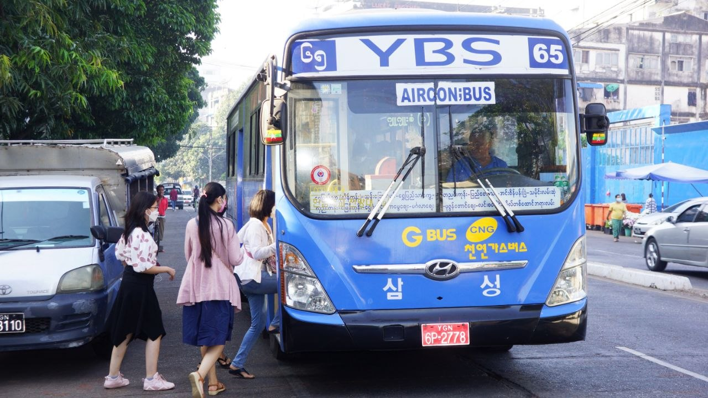
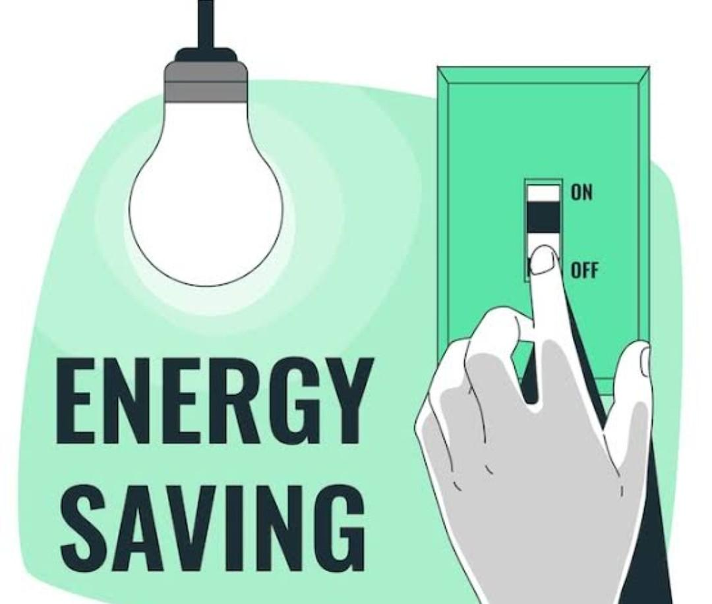
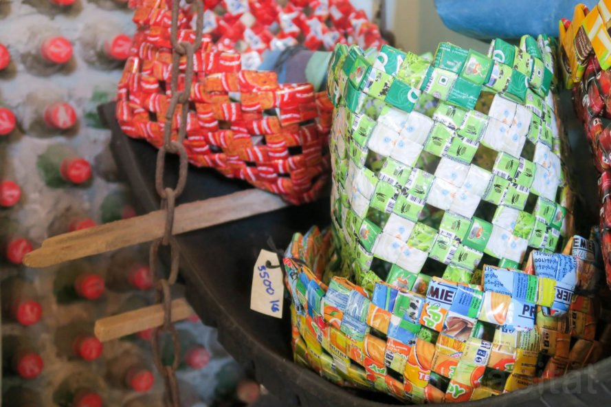
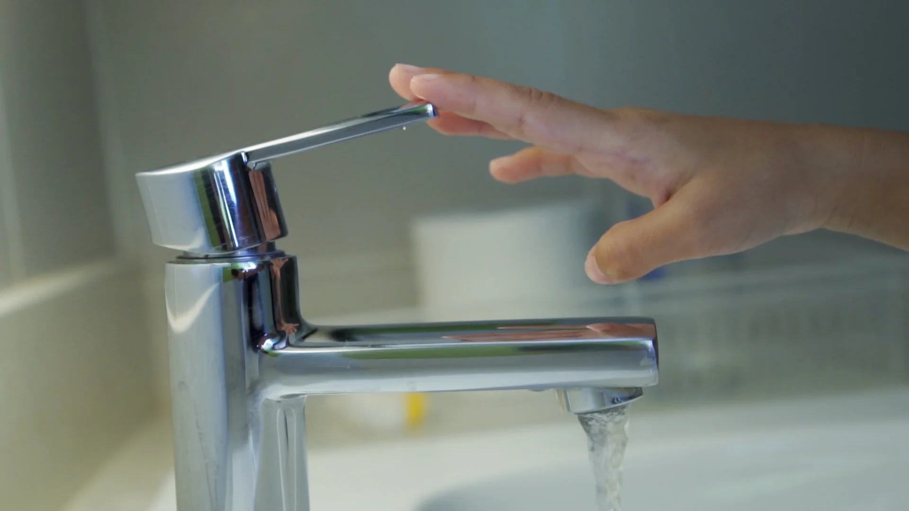
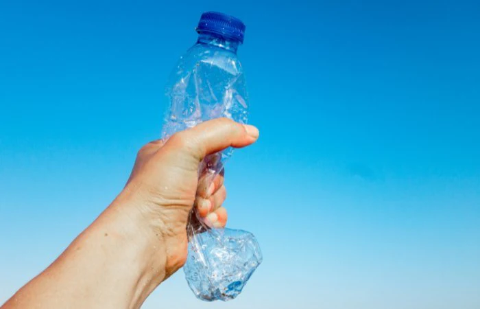
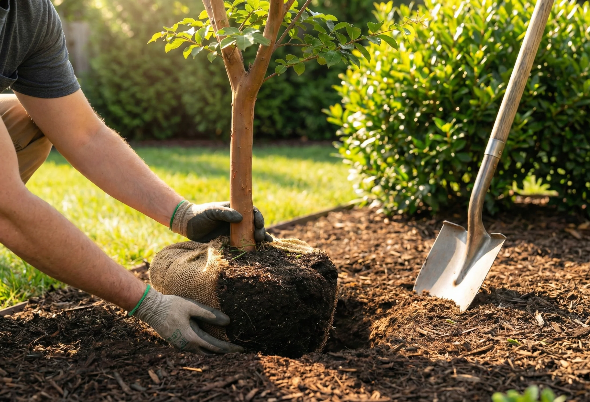
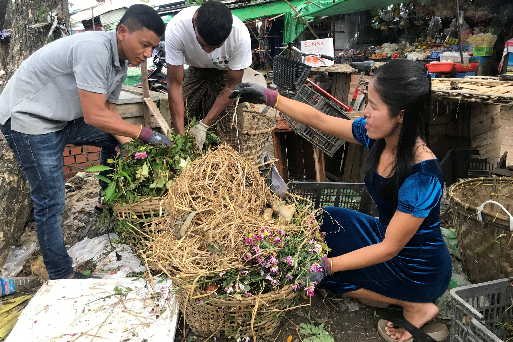
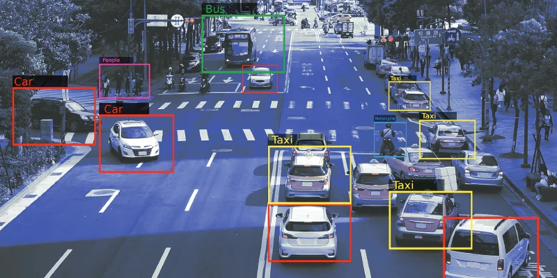
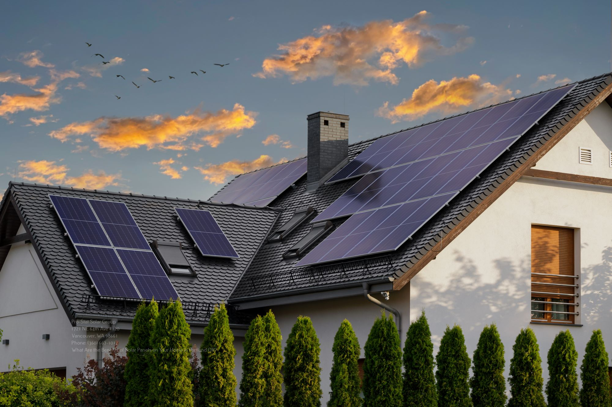
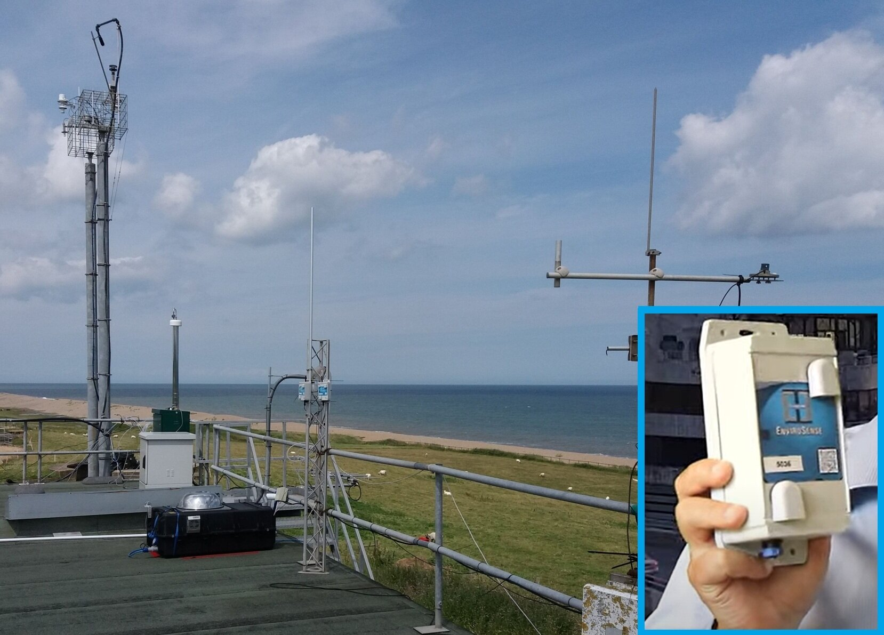

Small daily actions can reduce carbon emissions and help create cleaner, healthier and smarter cities for everyone.

Use walking or cycling for short trips to reduce carbon emissions and traffic congestion. It also improves physical health, saves fuel, and helps create a cleaner and healthier environment for future cities.

Buses and trains reduce traffic and carbon emissions by carrying many passengers at once. Choosing public transport instead of private cars can lower fuel use, improve air quality, and help create cleaner and smarter cities for future generations.

Switch off lights, fans, and devices when not in use. Keep electronic devices in power-saving mode and turn them off completely when possible. Saving electricity reduces energy waste and helps lower greenhouse gas emissions caused by power production.

Reuse and recycle items instead of throwing them away. Separating recyclable materials like paper, plastic, and glass helps reduce landfill waste and pollution while conserving natural resources and supporting a cleaner environment.

Turn off taps properly and use water wisely. Fix leaking taps and avoid wasting water while brushing your teeth or washing dishes. Saving water also saves energy because water treatment and transportation require electricity and resources.

Use reusable bottles, containers, and shopping bags instead of single-use plastics. Avoid littering and dispose of waste properly to keep rivers, streets, and oceans clean. Reducing plastic waste helps protect wild and marine life and keeps the environment healthier.

Trees absorb carbon dioxide and release oxygen and improve air quality. Supporting tree planting campaigns and protecting green spaces can help reduce pollution, provide shade, and create healthier communities for people and wildlife.

Only take the amount of food you need and avoid throwing leftovers away. Reducing food waste helps conserve resources such as water, energy, and farmland, while also lowering greenhouse gas emissions from decomposing waste.

AI Traffic Management — AI systems that can control traffic lights and reduce traffic congestion by adjusting signal timing based on real-time traffic flow and react to events real time.

Solar panels can provide clean renewable energy for homes, schools, and public areas while reducing carbon emissions. Even tho, expensive and rely on weather and produce not much electricty, it can be a good secondary alternative source.

EVs are pricy and people prefer traditional cars and in some urban areas, they lack EV charging stations. More charging stations can encourage people to use electric vehicles instead of fuel-powered cars which can lead to less carbon emissiom.

Smart sensors can monitor air pollution levels and warn communities when air quality becomes unhealthy which can prevent air related disease.
If everyone follows these simple habits, future cities will become cleaner, greener, and more sustainable with less pollution and better quality of life.